French Baccalaureate (STI2D) · Lycée Grandmont, Tours
Where my interest in engineering took root: design and mechanical study of technical systems, and my first steps in modeling.
STI2DDesignModeling
Mechanical engineering · INSA Lyon
Engineering student in product design and innovation. I turn a need into a part, and I check that it holds before it gets made.
Engineering student at INSA Lyon, majoring in Mechanical Engineering, Design and Product Innovation (GMCIP), after a Bachelor of Technology in Mechanical Engineering with a Digital Simulation and Virtual Reality track.
This portfolio brings together my academic and professional background:
My aim is to show how I have grown, what I can do and what I have built, with a focus on mechanical engineering and sustainable innovation.
Where my interest in engineering took root: design and mechanical study of technical systems, and my first steps in modeling.

Mechanical design, simulation and manufacturing. Digital Simulation and Virtual Reality track (CAD, CAM, finite elements), then a third year as a work-study apprentice at HAcare.
Mechanical Engineering, Design and Product Innovation (GMCIP) major, as a work-study apprentice at HAcare: engineering, project management, innovation and management.
A first internship at AutoMachine, then a work-study at HAcare since 2024, where I design medical furniture, mainly beds and stretchers.
Designed a motorized prototype machine that cuts boxes for recycling, along with its conveyor: structural sizing and mechanical calculations, then assembly and testing in the workshop to take the concept all the way to a working machine.
One year as a work-study apprentice during the third year of my BUT GMP. I designed 2D and 3D parts in SolidWorks with complete bills of materials, refined CAD models based on requirements analysis and feedback, and tracked project milestones in weekly meetings.
I stayed in the same design office for my three years of engineering school at INSA Lyon. I design and improve mechanical systems in SolidWorks, standardize components and CAD methods across the product range, and build and test prototypes to validate concepts, supporting cost and market studies.
Each skill is linked to the projects that demonstrate it.
Academic projects, sorted by field: the goal, the approach and the tools used.
A question about my projects or an opportunity: get in touch.